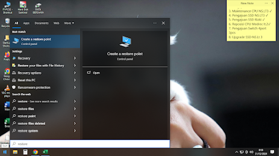

Cara Backup Data Komputer

System Restore adalah fitur dalam Microsoft Windows yang memungkinkan pengguna untuk mengembalikan kondisi komputer mereka (termasuk berkas sistem, aplikasi yang terinstal, Windows Registry , dan pengaturan sistem) ke kondisi sebelumnya, yang dapat digunakan untuk memulihkan dari kegagalan fungsi sistem atau masalah lainnya. Pertama kali disertakan dalam Windows Me , fitur ini telah disertakan dalam semua versi desktop Windows berikutnya yang dirilis sejak saat itu, kecuali Windows Server . Di Windows 10 , System Restore dimatikan secara default dan harus diaktifkan oleh pengguna agar dapat berfungsi. Fitur ini tidak memengaruhi berkas pribadi seperti dokumen, musik, gambar, dan video.
Pada versi Windows sebelumnya, hal ini didasarkan pada filter file yang mengamati perubahan untuk sekumpulan ekstensi file tertentu, lalu menyalin file sebelum ditimpa.Versi terbaru dari System Restore yang diperkenalkan oleh Windows Vista menggunakan layanan Shadow Copy sebagai backend (memungkinkan perubahan tingkat blok pada file yang terletak di direktori mana pun pada volume untuk dipantau dan dicadangkan terlepas dari lokasinya) dan memungkinkan System Restore untuk digunakan dari Windows Recovery Environment jika instalasi Windows tidak dapat di-boot sama sekali.
Dalam System Restore, pengguna dapat membuat titik pemulihan baru secara manual (berbeda dengan sistem yang membuatnya secara otomatis), melakukan rollback ke titik pemulihan yang ada, atau mengubah konfigurasi System Restore. Selain itu, pemulihan itu sendiri dapat dibatalkan. Titik pemulihan lama dibuang untuk menjaga penggunaan volume dalam jumlah yang ditentukan. Bagi banyak pengguna, ini dapat menyediakan titik pemulihan yang mencakup beberapa minggu terakhir. Pengguna yang khawatir dengan kinerja atau penggunaan ruang juga dapat memilih untuk menonaktifkan System Restore sepenuhnya. File yang disimpan pada volume yang tidak dipantau oleh System Restore tidak pernah dicadangkan atau dipulihkan. Pemulihan Sistem mencadangkan file sistem dengan ekstensi tertentu (.exe, .dll, dll.) dan menyimpannya untuk pemulihan dan penggunaan nanti. Ia juga mencadangkan registri dan sebagian besar driver.
- Berikut Cara Mengangktifkan System Restore Pada Windows 10 :
- Klik Windows atau Start lalu ketikkan "Restore" , pilih "Create A Restore Point"

- Setelah terbuka, klik satu persatu drive mana yang akan diaktifkan sistem restore , mulai dari drive "System (C:) , lalu klik "Configure".

-
Pilih "Turn On System Protection"
.png)
-
Lalu pada "Max Usage:" geser ke kanan sampai maximal agar memori yang akan di cadangkan tersebut akan memakan berapa besarnya MB / GB, misalnya jika memori yang dicadangkan disetting 48.83Gb (max) 100% maka setelah memori dicadangkan setelah memakan sebesar 48.83gb / sudah 100% maka akan otomatis berhenti mencadangkan, dan selanjutnya tidak akan dicadangkan.
.png)
- Klik "Apply" dan Klik "Ok" , selesai
..Selamat Mencoba..